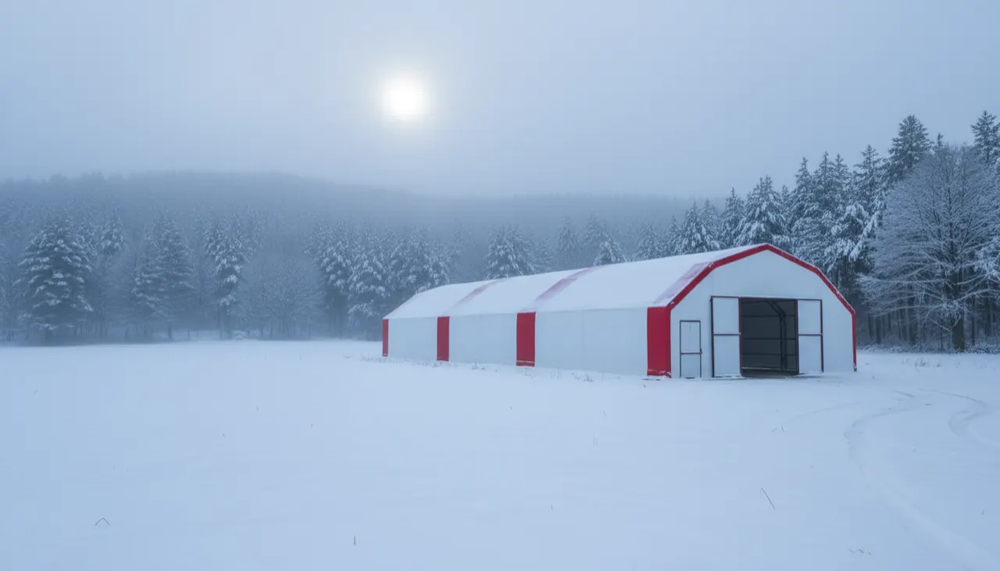

Karabük Tavuk Çadırı
İstanbul'dan yaklaşık 405 km, 5,5 saatlik yol. Karabük'te vadi tabanı bir türlü, çevredeki ormanlık dağ kuşağı bambaşka bir kış yaşar; kümesi de bu ikiliye göre kuruyoruz.

Karabük'e teklif isteyen çoğu kişi aynı yerden başlıyor: kışın kar ve sis altında çadır kümes ayakta kalır mı? İlin coğrafyası bu soruyu haklı çıkarıyor. Merkez, Kardemir'in de bulunduğu vadi tabanında; burada yazlar sıcak, kışlar soğuk ve sisli geçer. Yenice, Ovacık, Eflani tarafına, o sık ormanlık kuşağa çıktıkça kar hem daha erken bastırıyor hem daha uzun kalıyor.
Biz İstanbul'da üretip kurulu teslim ediyoruz; Karabük'e nakliye ve kurulum fiyata dahil. Yani ilçe yoluna kadar getirir, iskeleti biz kurar, çadırı biz gereriz. Sizin tarafta hazır olması gereken tek şey düz bir zemin ve mümkünse su-elektrik hattının yakın olması.
Bu ilde standart önerimiz 4 kat yalıtım. Sebebini aşağıda kar yükü ve iç sıcaklık üzerinden tek tek açıyoruz; Safranbolu turizminin köy yumurtasına ne yaptığına ve hangi kapasitenin size oturduğuna da giriyoruz.
Vadi ile dağ arası: yalıtımı neye göre seçiyoruz
Karabük'ün kışını tek bir cümleyle geçmek yanlış olur, çünkü il kendi içinde ikiye ayrılıyor. Merkezin oturduğu vadi tabanında kar yağıyor ama günlerin çoğuna sis ve nem damgasını vuruyor; asıl kalıcı, üst üste biriken karı ise Yenice, Ovacık, Eflani gibi yüksek ve ormanlık ilçeler alıyor. Kümesinizi hangi rakımda, ne kadar açık bir arazide kuracağınız yalıtım kararını doğrudan belirliyor.
Çadırlarımız 3 kat ve 4 kat yalıtım seçenekleriyle geliyor; yalıtım, alüminyum bizafol katmanlarıyla sağlanıyor. Karabük için varsayılan önerimiz 4 kat. Fark şurada: dört katta iç astar ile dış branda arasındaki hava boşluğu daha kalın kalıyor, gece dışarısı eksiye indiğinde iç sıcaklık daha yavaş düşüyor, sabaha karşı çadırın içinde daha az yoğuşma oluyor. Nemin bu kadar baskın olduğu bir ilde yoğuşma verimi doğrudan ilgilendirir; ıslak altlık kısa sürede hasta tavuğa dönüşür.
Merkeze yakın, alçak ve rüzgârdan korunaklı bir arazide 3 kat da iş görür; ama Karabük'te bütçe elveriyorsa dört kat, bir kışta kendini çıkaran bir tercih. Kışın kümesi sıcak tutmanın yalıtım dışındaki püf noktalarını da ayrı bir yazıda topladık.
Makaslı iskelet karı neden taşır
Kar yükü, çadır kümeslerde en çok yanlış anlaşılan konu. İnsanların gözünde "çadır" deyince eğreti bir şey canlanıyor; oysa işi taşıyan asıl unsur alttaki iskelet. Bizim yapılarda 40x40, 2 mm galvaniz çelik profilden makas iskelet kullanılıyor. Makaslı çatının eğimi, üstüne binen karı yanlara kaydırıyor; kar tek noktada birikip yük yapmadan aşağı akıyor.
Yenice ve Ovacık ormanlarının eteğinde kar çoğu zaman ıslak ve ağır düşer, bu yüzden çatının kar biriktirmemesi daha da önem kazanıyor. Yine de kışın en sert günlerinde çatının üstünü ara ara kontrol etmek, gerekirse uzun saplı bir fırçayla sıyırmak yerinde bir alışkanlık; bunu kurulum sırasında size gösteriyoruz. Branda tarafında 650 g/m² TSE damgalı, UV dayanımlı ve alev yürütmez bir kumaş var; standart bir çadıra göre üç kat daha dayanıklı. Çadır kümesin ömrünü ayrı bir yazıda kar, rüzgâr ve güneş başlıklarıyla açıkladık.
405 kilometre yolu biz alıyoruz
Karabük, İstanbul'a yaklaşık 405 km; yükümüzle birlikte 5,5 saatlik bir yol. Bu mesafe fiyatınıza dahil, ayrıca nakliye ücreti çıkmıyor. Siparişi kesinleştirdikten sonra genelde on gün içinde çadırı kurulu teslim ediyoruz; ilçe uzaklığına ve o dönemki yoğunluğa göre kesin günü baştan konuşup netleştiriyoruz.
Kurulum ekibi İstanbul merkezden çıkıyor; Karabük'te şubemiz ya da deponuz yok, olduğunu da söylemeyiz. Safranbolu, Eskipazar, Eflani, hangi ilçeye kuruyorsak aracın son metreye kadar yaklaşabildiği düz bir alan işi hayli kolaylaştırıyor. Kışın kurulum planlıyorsanız yol ve arazi durumunu birlikte değerlendirip tarihi ona göre koyuyoruz. Kurulumun il il nasıl işlediğini kurulum bölgeleri sayfasında topladık.
Safranbolu turizmi köy yumurtasını çekiyor
Karabük'ün ekonomisi demir-çelikle anılır; Kardemir ilin lokomotifi. Ama yüzölçümün büyük kısmı orman ve tarım, Eflani, Eskipazar, Ovacık gibi ilçelerde küçük aile işletmeleri ölçeğinde. Köy tavukçuluğu ve arıcılık buralarda uzun süredir ek gelir kapısı; ilin en bilinen tarımsal ürünü ise adını Safranbolu'ya veren safran.
Sizin için asıl fırsat Safranbolu turizmi. Yıl boyu süren ziyaretçi trafiği, konak otellerin köy kahvaltısı sofraları ve yöresel ürün dükkânları köy yumurtasına kesintisiz bir talep yaratıyor. Serbest dolaşan, doğal beslenen tavuğun yumurtası bu pazarda hem alıcı buluyor hem daha iyi fiyatlanıyor. Yumurtaya yönelik bir düzen kuracaksanız gezen tavuk sistemini baştan doğru kurmak, çadırın içini de dışını da verimli kullanmanızı sağlıyor.
Kaç tavuk, hangi ölçü
Ölçüyü hedefinize göre seçiyoruz. Pratik kural, metrekare başına yaklaşık 7 tavuk; yani 70 m²'lik 7x10'luk çadıra kabaca 500 tavuk giriyor. Safranbolu'ya yumurta satmak için başlangıç düşünüyorsanız bu ölçü çoğu kişiye yetiyor, sonradan büyümeye de açık kalıyor.
Daha geniş bir sürü hedefliyorsanız 7x20 (140 m², ~980 tavuk) ya da 10x20 (200 m², ~1.400 tavuk) gibi büyük ölçüler devreye giriyor. Karabük için 4 kat yalıtımlı 500'lük çadır 105.000 TL'den başlıyor; nakliye ve kurulum bu rakama dahil. Yemlik, nipel suluk, folluk ve fan gibi ekipmanı isteğe bağlı, talebinize göre birlikte gönderiyoruz. Tüm ölçülerin iki yalıtım seçeneğiyle listesi fiyatlar sayfasında; 500 tavukluk modelin ayrıntısına da oradan bakabilirsiniz.
Karabük için güncel fiyatlar
Fiyatlara nakliye ve kurulum dahildir; Karabük teslimatı da ücretsizdir. 7 farklı ölçünün tamamı için fiyat tablosuna bakabilirsiniz.
Karabük için sık sorulanlar
Karabük'ün karı çadır kümese zarar verir mi?
Karabük için 3 kat mı 4 kat yalıtım mı almalıyım?
İstanbul'dan Karabük'e kurulum ne kadar sürüyor?
Karabük'e nakliye ücreti çıkıyor mu?
Çadırı kurmak için beton zemin şart mı?
Karabük'te tavuk çadırı için ruhsat gerekir mi?
İşinize yarayacak rehberler
Karabük projenizi birlikte planlayalım
Kapasitenizi ve kurulumu düşündüğünüz ilçeyi yazın; ölçüyü, yalıtımı ve teklifi aynı gün netleştirelim.
WhatsApp'tan yazın